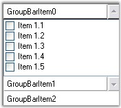
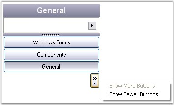
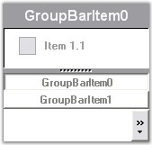

The look and feel of the GroupBar can be controlled through the appearance properties of the control. These properties are discussed in detail in the below topics.
Scroll buttons can be included for the client controls in the GroupBar by setting the IntegratedScrolling property to 'True'.
|
GroupBar Property |
Description |
|
IntegratedScrolling |
Draws a set of scroll thumbs on the GroupBar. This mode is used for creating a VS.NET toolbox type interface where the GroupBar provides the scrolling support for the GroupView client controls. |
|
[C#]
this.groupBar1.IntegratedScrolling = true; |
|
[VB.NET]
Me.groupBar1.IntegratedScrolling = True |

Figure 861: GroupBar with Integrated Scrolling
The following are the properties available for GroupBar Items when the GroupBar is in the Stacked Mode. The Stacked Mode can be enabled by setting the StackedMode property to 'True'.
|
GroupBarItem Property |
Description |
|
InNavigationPane |
Specifies the value which determines whether the GroupBar Item should be added to the GroupBar's navigation pane or not. |
|
NavigationPaneIcon |
The icon representing the GroupBar's item in the navigation pane. |
|
NavigationPaneImage |
Gets / sets the image representing the GroupBar's item in the navigation pane. |
|
ShowChevron |
Gets / sets the value indicating whether the chevron button on the navigation panel is shown or not. |
|
[C#]
// StackeMode set to true. this.groupBarItem1.InNavigationPane = true; this.groupBarItem1.NavigationPaneIcon = ((System.Drawing.Icon)(resources.GetObject("groupBarItem1.NavigationPaneIcon"))); this.groupBarItem1.NavigationPaneImage = ((System.Drawing.Image)(resources.GetObject("groupBarItem1.NavigationPaneImage"))); |
|
[VB.NET]
' StackeMode set to true. Me.groupBarItem1.InNavigationPane = True Me.groupBarItem1.NavigationPaneIcon = DirectCast((Resources.GetObject("groupBarItem1.NavigationPaneIcon")), System.Drawing.Icon) Me.groupBarItem1.NavigationPaneImage = DirectCast((Resources.GetObject("groupBarItem1.NavigationPaneImage")), System.Drawing.Image) |
If you want to display an icon or image for the GroupBar Item displayed in the GroupBar's navigation pane, set theInNavigationPane property to 'True' and associate icons or images with the NavigationPaneIcon and NavigationPaneImage properties respectively.
Figure 862: StackedGroupBar with GroupBar Items in its Navigation Pane
Stacked GroupBar Item automatically shows the Chevron, which can be made invisible by setting the ShowChevron property to 'False'.

Figure 863: Chevron shown when GroupBar is in Stacked Mode
 Note : You should set LargeImageMode of
GroupBarItem to 'True' to display the item images in the GroupBar's navigation
pane.
Note : You should set LargeImageMode of
GroupBarItem to 'True' to display the item images in the GroupBar's navigation
pane.
Navigation Pane
The following table lists the properties related to the Navigation Pane.
|
GroupBar Property |
Description |
|
NavigationPaneButtonWidth |
Specifies the width of the GroupBar Items displayed in the navigation pane. This property will be available only when StackedMode property is set to 'True'. |
|
NavigationPaneHeight |
Specifies the height of the GroupBar Navigation pane. This property will be available only when StackedMode property is set to 'True'. |
|
[C#]
// StackeMode set to true. this.groupBar1.NavigationPaneButtonWidth = 25; this.groupBar1.NavigationPaneHeight = 35; |
|
[VB.NET]
' StackeMode set to true. Me.groupBar1.NavigationPaneButtonWidth = 25 Me.groupBar1.NavigationPaneHeight = 35 |
The Navigation Pane is displayed when the GroupBar is in the Stacked Mode. It's height and width can be adjusted by setting the NavigationPaneButtonWidth and NavigationPaneHeight properties to integer values.

Figure 864: GroupBar with NavigationPaneButtonWidth = "25" and
NavigationPaneHeight = "35"
This section discusses settings of a groupbar in its collapsed state.
Note: AllowCollapse property should be set
to true to effect the below settings.
|
GroupBarItem Property |
Description |
|
Collapsed |
Indicates whether this groupbar is collapsed. |
|
CollapsedText |
Gets or sets the text in collapsed client area of the groupbar. |
|
CollapsedWidth |
Indicates the width of the collapsed GroupBar. |
|
[C#]
this.groupBar1.AllowCollapse = true; this.groupBar1.Collapsed = true; this.groupBar1.CollapsedText = "Navigation Pane"; this.groupBar1.CollapsedWidth = 45; |
|
[VB.NET]
Me.groupBar1.AllowCollapse = True Me.groupBar1.Collapsed = True Me.groupBar1.CollapsedText = "Navigation Pane" this.groupBar1.CollapsedWidth = 45; |
Image for collapse / Expand States
The below properties set images for the collapse button based on the button states.
|
GroupBarItem Property |
Description |
|
CollapseImage |
Gets or sets the image of the collapse button in expanded state. |
|
ExpandImage |
Gets or sets the image of the collapse button. |
|
[C#]
this.groupBar1.CollapseImage = ((System.Drawing.Image)(resources.GetObject("groupBar1.CollapseImage"))); this.groupBar1.ExpandImage = ((System.Drawing.Image)(resources.GetObject("groupBar1.ExpandImage"))); |
|
[VB.NET]
Me.groupBar1.CollapseImage = DirectCast((resources.GetObject("groupBar1.CollapseImage")), System.Drawing.Image) Me.groupBar1.ExpandImage = DirectCast((resources.GetObject("groupBar1.ExpandImage")), System.Drawing.Image) |